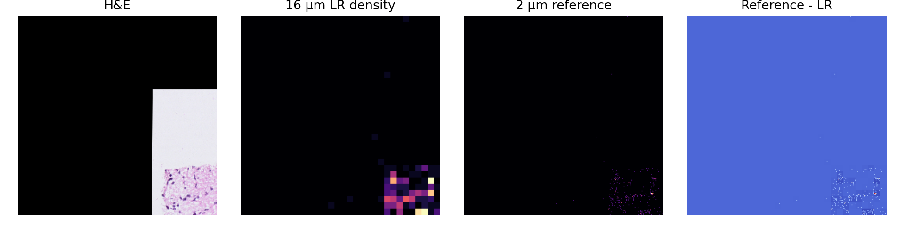
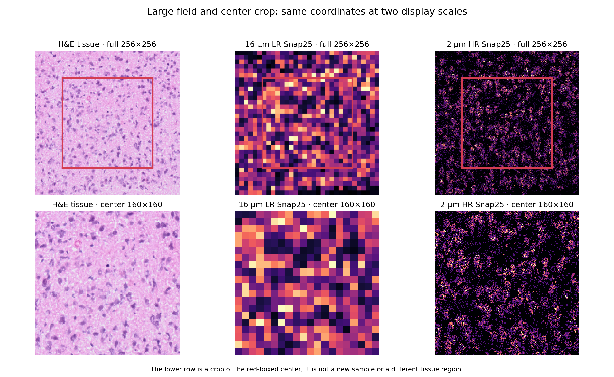
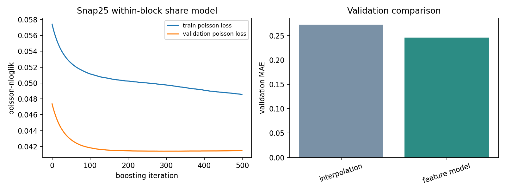
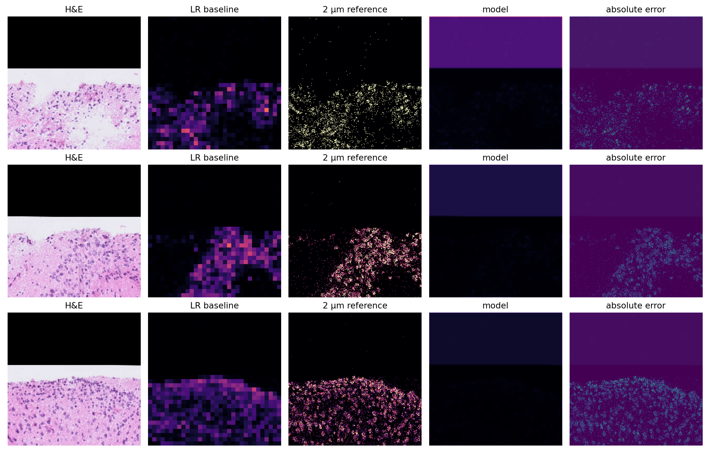

KYDW 本科生科研入门体验项目
实践项目参考答案 05：空间转录组与表达超分辨率
参考代码与说明按实践任务排列，可结合图像、指标和输出文件核对自己的实现。
运行后把图像、指标和输出文件与自己的结果放在一起阅读。
Markdown 单元格01
实践项目 05：空间转录组表达超分辨率
本 Notebook 使用课程准备的配对 H&E、LR、HR 和 split 数据。LR 表示 16 μm Snap25 输入，HR 表示 2 μm 参考表达图，模型学习在细网格上估计一个高表达基因的局部表达。
Kaggle 是本项目的首选实践入口。打开公开 Notebook 后，点击“复制并编辑”保存到自己的账户，再按单元格顺序运行。下载 Notebook 到电脑运行是补充方式。
代码单元格保留行末注释，说明每一步的输入、处理和输出；参考实现与实践顺序对应。
任务总览
1. 核对四个字段的 shape、split 数量和 Snap25 表达范围。 2. 选择中心区域，查看同一位置的大图、小图、H&E、LR 和 HR。 3. 实现 H&E 与粗尺度表达联合输入的轻量网络。 4. 完成 log 空间损失和 8×8 区域总量约束。 5. 比较模型与插值基线的 MAE、相关性、聚合误差和空间图。
需要保存的结果
task5_data_visualization.png、task5_scale_overview.png、task5_training_curve.png、task5_prediction_visualization.png、task5_result.json。
代码单元格02
from pathlib import Path # 用 Path 处理文件和目录路径
import json, random
import numpy as np # 导入数组和数值运算工具
import matplotlib.pyplot as plt # 导入绘图工具
import torch # 导入张量、模型或数据加载工具
import torch.nn as nn # 导入张量、模型或数据加载工具
from torch.utils.data import Dataset, DataLoader # 导入张量、模型或数据加载工具
SEED = 42; random.seed(SEED); np.random.seed(SEED); torch.manual_seed(SEED) # 固定随机状态以便复现实验
DEVICE = torch.device('cuda' if torch.cuda.is_available() else 'cpu') # 选择可用的计算设备
OUT = Path('/kaggle/working'); OUT.mkdir(exist_ok=True) # 保存输出文件目录
DATA_PATH = None # 可在本地填写课程 NPZ 路径；Kaggle 自动查找固定文件名
candidates = sorted(Path('/kaggle/input').rglob('kydw-try-a05-paired-patches.npz'))
if DATA_PATH is None and candidates: DATA_PATH = candidates[0]
assert DATA_PATH is not None, '请挂载包含 kydw-try-a05-paired-patches.npz 的课程数据集。' # 核对数据或计算结果是否符合预期条件
data = np.load(DATA_PATH, allow_pickle=True)
required = {'he','lr','hr','split'} # 核对输入字段
assert required.issubset(data.files), required - set(data.files) # 核对数据或计算结果是否符合预期条件
he = data['he'].astype(np.float32) / 255.0 # 读取 H&E 图像并归一化
lr = data['lr'].astype(np.float32) # 读取 16 μm 粗尺度表达总量
hr = data['hr'].astype(np.float32) # 读取 2 μm 参考表达图
split = data['split'].astype(str) # 读取预先划分的数据集合
print('he/lr/hr:', he.shape, lr.shape, hr.shape, 'splits:', {k: int((split == k).sum()) for k in np.unique(split)}) # 显示核对结果
Markdown 单元格03
任务 1：核对输入字段与空间划分
H&E、LR 和 HR 覆盖同一空间区域。LR 在每个 8×8 区域内记录粗尺度总量；split 是课程数据预先提供的空间划分。
代码单元格04
summary = {
'shapes': {'he': list(he.shape), 'lr': list(lr.shape), 'hr': list(hr.shape)},
'split_counts': {kind: int((split == kind).sum()) for kind in ('train', 'validation', 'test')},
'lr_nonzero_ratio': float((lr > 0).mean()),
'hr_nonzero_ratio': float((hr > 0).mean()),
'lr_max': float(lr.max()), 'hr_max': float(hr.max()),
}
assert set(np.unique(split)) <= {'train', 'validation', 'test'}
print(summary)
Markdown 单元格05
任务 2：配对大图、小图与表达图
从 train 样本中选择组织覆盖较完整、表达信号可见的一项，把 H&E、LR 粗尺度密度和 HR 参考表达图放在同一行，再截取中心区域放大。三列来自同一个空间区域，色标可以分别设置。
代码单元格06
train_ids = np.where(split == 'train')[0] # 选择训练样本
coverage_score = (he[train_ids].mean(axis=1) < .98).mean(axis=(1, 2)) + 2 * (hr[train_ids] > 0).mean(axis=(1, 2, 3)) # 优先选择组织覆盖和表达信号清晰的区域
sample_index = int(train_ids[np.argmax(coverage_score)])
lr_density = lr[sample_index, 0] / 64.0; hr_reference = hr[sample_index, 0]
fig, axes = plt.subplots(1, 3, figsize=(13, 4.4))
for axis, value, title, cmap in zip(axes, [np.moveaxis(he[sample_index], 0, -1), lr_density, hr_reference], ['H&E', '16 μm LR Snap25', '2 μm HR Snap25'], [None, 'magma', 'magma']):
axis.imshow(value, cmap=cmap); axis.set_title(title); axis.axis('off')
fig.tight_layout(); fig.savefig(OUT / 'task5_data_visualization.png', dpi=180); plt.close(fig)
crop = (slice(48, 208), slice(48, 208))
fig, axes = plt.subplots(2, 3, figsize=(13, 8))
for column, value in enumerate([np.moveaxis(he[sample_index], 0, -1), lr_density, hr_reference]):
axes[0, column].imshow(value, cmap=None if column == 0 else 'magma'); axes[1, column].imshow(value[crop], cmap=None if column == 0 else 'magma')
axes[0, column].set_title('full 256×256'); axes[1, column].set_title('center 160×160'); axes[0, column].axis('off'); axes[1, column].axis('off')
fig.tight_layout(); fig.savefig(OUT / 'task5_scale_overview.png', dpi=180); plt.close(fig)
print('sample index:', sample_index)
Markdown 单元格07
任务 3：实现融合网络
输入为 4 个通道（H&E 三通道和 LR 密度），输出为 1 个通道的细尺度表达预测。
代码单元格08
class STDataset(Dataset):
def __init__(self, kind):
self.ids = np.where(split == kind)[0] # 保存当前划分的样本编号
def __len__(self):
return len(self.ids) # 返回样本数量
def __getitem__(self, index):
sample_id = int(self.ids[index]) # 读取一个样本编号
lr_total = lr[sample_id] # 读取 16 μm 粗尺度表达
features = np.concatenate([he[sample_id], np.log1p(lr_total / 64.0)], axis=0) # 拼接 H&E 与 LR 通道
target = np.log1p(hr[sample_id]) # 在 log 空间表示 2 μm 参考表达
return torch.from_numpy(features), torch.from_numpy(target), torch.from_numpy(lr_total), sample_id # 返回训练所需数据
class SRNet(nn.Module):
def __init__(self):
super().__init__() # 初始化网络基类
self.body = nn.Sequential( # 建立轻量卷积特征提取器
nn.Conv2d(4, 16, 3, padding=1), # 读取 4 个输入通道
nn.ReLU(), # 保留非线性表达能力
nn.Conv2d(16, 16, 3, padding=1), # 细化局部空间特征
nn.ReLU(), # 继续进行非线性变换
nn.Conv2d(16, 1, 3, padding=1), # 输出一个基因的表达残差
)
def forward(self, x):
return torch.nn.functional.softplus(x[:, 3:4] + self.body(x)) # 以 LR 表达为基础并保持非负输出
model = SRNet().to(DEVICE) # 创建模型并放到计算设备
print(model) # 查看模型结构
Markdown 单元格09
任务 4：损失和 8×8 总量约束
预测值按 8×8 区域求和后，应与 LR 中的粗尺度总量接近；这项约束让输出保留观测到的总量。
代码单元格10
def aggregate8(x):
return torch.nn.functional.avg_pool2d(x, 8, 8) * 64 # 计算每个 8×8 区域的表达总量
def loss_fn(pred_log, target_log, lr_raw):
pred = torch.expm1(pred_log).clamp_min(0) # 恢复预测的原始尺度
target = torch.expm1(target_log).clamp_min(0) # 恢复目标的原始尺度
l1 = (pred_log - target_log).abs().mean() # 计算 log 表达差异
observed = torch.nn.functional.avg_pool2d(lr_raw, 8, 8) * 64 # 计算 LR 在对应区域的总量
consistency = (aggregate8(pred) - observed).abs().mean() # 计算空间聚合一致性
return l1 + .1 * consistency # 合并像素误差与区域约束
Markdown 单元格11
任务 5：训练与结果比较
完成训练后，比较模型与插值基线的 MAE、Pearson 相关性和 8×8 聚合误差，并查看预测、参考和误差图。
代码单元格12
# ===== 项目05·任务5·参考实现（开始） =====
# 参考实现：完成训练、验证选模、模型与插值基线比较，以及结果保存。
train_loader = DataLoader(STDataset('train'), batch_size=4, shuffle=True) # 建立训练批次
val_loader = DataLoader(STDataset('validation'), batch_size=4, shuffle=False) # 建立验证批次
optimizer = torch.optim.Adam(model.parameters(), lr=2e-3, weight_decay=1e-4) # 配置优化器
history = [] # 保存训练和验证损失
best_val = float('inf') # 初始化验证集最佳损失
best_state = None # 保存最佳模型参数
for epoch in range(60):
model.train() # 切换到训练模式
train_losses = [] # 收集训练批次损失
for x, target_log, lr_raw, _ in train_loader:
x, target_log, lr_raw = x.to(DEVICE), target_log.to(DEVICE), lr_raw.to(DEVICE) # 搬运当前批次
optimizer.zero_grad(set_to_none=True) # 清空旧梯度
prediction = model(x) # 计算模型预测
loss = loss_fn(torch.log1p(prediction), target_log, lr_raw) # 计算训练目标
loss.backward() # 反向传播
torch.nn.utils.clip_grad_norm_(model.parameters(), 1.0) # 限制梯度过大
optimizer.step() # 更新模型参数
train_losses.append(float(loss.detach().cpu())) # 保存当前批次损失
model.eval() # 切换到评价模式
val_losses = [] # 收集验证批次损失
with torch.no_grad():
for x, target_log, lr_raw, _ in val_loader:
x, target_log, lr_raw = x.to(DEVICE), target_log.to(DEVICE), lr_raw.to(DEVICE) # 搬运验证批次
val_losses.append(float(loss_fn(torch.log1p(model(x)), target_log, lr_raw).cpu())) # 计算验证损失
train_loss = float(np.mean(train_losses)) # 汇总训练损失
val_loss = float(np.mean(val_losses)) # 汇总验证损失
history.append((train_loss, val_loss)) # 保存当前轮次结果
if val_loss < best_val:
best_val = val_loss # 更新最佳验证损失
best_state = {name: value.detach().cpu().clone() for name, value in model.state_dict().items()} # 保存最佳参数
if best_state is not None:
model.load_state_dict(best_state) # 使用验证集最佳参数
fig, axis = plt.subplots(figsize=(6.5, 3.8)) # 准备训练曲线
axis.plot([item[0] for item in history], label='train loss') # 绘制训练损失
axis.plot([item[1] for item in history], label='validation loss') # 绘制验证损失
axis.set(xlabel='epoch', ylabel='loss', title='Snap25 model training') # 标注坐标轴
axis.legend() # 显示图例
fig.tight_layout(); fig.savefig(OUT / 'task5_training_curve.png', dpi=160); plt.close(fig) # 保存训练曲线
model.eval() # 固定评价模式
test_ids = np.where(split == 'test')[0] # 选择测试样本
with torch.no_grad():
test_features = np.concatenate([he[test_ids], np.log1p(lr[test_ids] / 64.0)], axis=1) # 组织测试输入
x = torch.from_numpy(test_features).to(DEVICE) # 转换测试张量
prediction = model(x).cpu().numpy()[:, 0] # 得到一个基因的预测表达
target = hr[test_ids, 0] # 读取 HR 参考表达
interpolation = lr[test_ids, 0] / 64.0 # 计算 LR 插值基线
scores = ((he[test_ids].mean(axis=1) < .98).mean(axis=(1, 2)) + 2 * (target > 0).mean(axis=(1, 2))) # 优先选择组织覆盖完整的样本
display_rows = np.argsort(scores)[-3:] # 选择三个便于阅读的测试区域
fig, axes = plt.subplots(len(display_rows), 5, figsize=(14, 3.2 * len(display_rows))) # 准备预测面板
axes = np.atleast_2d(axes) # 统一坐标轴形状
for row, local_index in enumerate(display_rows):
values = [np.moveaxis(he[test_ids[local_index]], 0, -1), interpolation[local_index], target[local_index], prediction[local_index], np.abs(prediction[local_index] - target[local_index])] # 准备五列图像
titles = ['H&E', '16 μm LR Snap25', '2 μm HR reference', 'model prediction', 'absolute error'] # 设置图像标题
for column, (value, title) in enumerate(zip(values, titles)):
axes[row, column].imshow(value, cmap=None if column == 0 else ('viridis' if column == 4 else 'magma')) # 显示输入、参考和误差
axes[row, column].set_title(title, fontsize=8); axes[row, column].axis('off') # 标注当前图像
fig.tight_layout(); fig.savefig(OUT / 'task5_prediction_visualization.png', dpi=160); plt.close(fig) # 保存预测结果图
aggregation_error = np.abs(torch.nn.functional.avg_pool2d(torch.from_numpy(prediction[:, None]), 8, 8).numpy() * 64 - torch.nn.functional.avg_pool2d(torch.from_numpy(lr[test_ids]), 8, 8).numpy() * 64).mean() # 计算聚合误差
def safe_corr(left, right):
return float(np.corrcoef(left.ravel(), right.ravel())[0, 1]) if np.std(left) > 0 and np.std(right) > 0 else 0.0 # 计算稳定的 Pearson 相关性
result = {
'gene': 'Snap25', # 记录预测基因
'test_mae_model': float(np.abs(prediction - target).mean()), # 记录模型 MAE
'test_mae_interpolation': float(np.abs(interpolation - target).mean()), # 记录插值基线 MAE
'test_pearson_model': safe_corr(prediction, target), # 记录模型相关性
'test_8x8_aggregation_mae': float(aggregation_error), # 记录聚合一致性
}
(OUT / 'task5_result.json').write_text(json.dumps(result, ensure_ascii=False, indent=2), encoding='utf-8') # 保存结果 JSON
print(result) # 查看结果
参考输出
当前 Notebook 固定预测 Snap25 一个基因；结果 JSON 记录模型 MAE、插值基线 MAE 与像素相关性，空间聚合一致性用于补充检查。该结果不代表恢复了多基因表达或完整的细尺度空间转录组。

同一空间区域的 H&E、16 μm LR Snap25 和 2 μm HR Snap25
配对大图和中心小图的空间范围
模型训练损失与验证比较
Snap25 表达预测与参考图比较